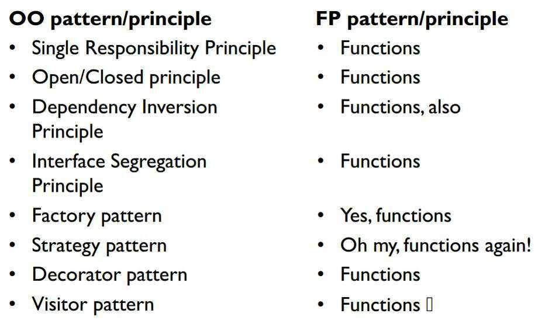
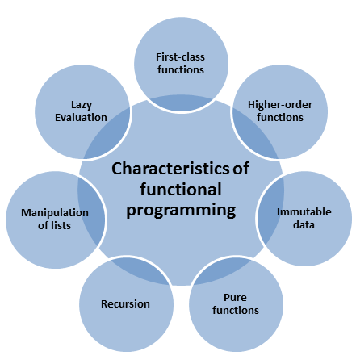
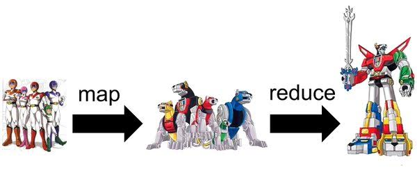
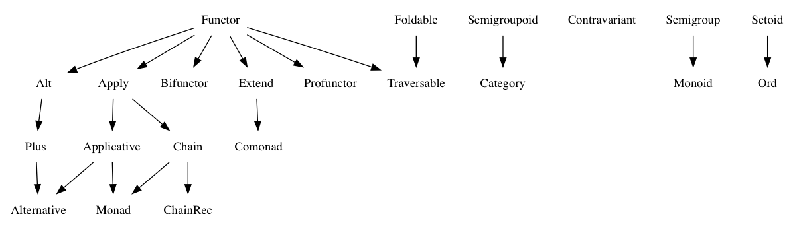

Functional Programming with JavaScript
Overview and features
Created by Elizabeth Dolgaya
What is it all about?
The FP Challenges:
- if-else condition (“Either” Monad)
- Null Exceptions (“Maybe” Monad)
- reusable functions (Pure functions, referential transparency)
- unchanged data (Pure functions, immutability)
- multiple values (“currying” and “higher-order functions”)
...and more.
The FP Concepts:
Pure functions vs Shared state
- Same input always returns same output
- No side effects
Side Effects
- Modifying any external variable or object property
- Logging to the console
- Writing to the screen
- Writing to a file
- Writing to the network
- Triggering any external process
- Calling any other functions with side-effects
First class and higher order functions
- Abstract or isolate actions, effects, or async flow control using callback functions, promises, monads, etc…
- Create utilities which can act on a wide variety of data types
- Partially apply a function to its arguments or create a curried function for the purpose of reuse or function composition
- Take a list of functions and return some composition of those input functions
So what about JS?
Fantasy Land
FL implementations:
- monet.js
- barely-functional
- folktalejs
- ramda-fantasy(based on Rambda)
- immutable-ext (based on ImmutableJS)
- Fluture
...
Functor
Any class(or construction function) or a datatype that stores a value and implements “map” method.
const add1 = (a) => a+1;
let myArray = new Array(1, 2, 3, 4); //store values
myArray.map(add1) // -> [2,3,4,5] //applies functions
const add1 = (a) => a + 1;
class MyFunctor { //Custom "Functor"
constructor(value) {
this.val = value;
}
map(fn) {
//Applies function to this.val + returns new Myfunctor
return new Myfunctor(fn(this.val));
}
}
//temp is a Functor instance that's storing value 1
let temp = new MyFunctor(1);
temp.map(add1) //-> temp allows us to map "add1"
Monads
Monads are classes or constructor functions that store some data and implements “map”, “ap”, “of” and “chain” methods that do something with the stored data as per spec.
class Monad {
constructor(val) {
this.__value = val;
}
static of(val) {//Monad.of is simpler than "new Monad(val)
return new Monad(val);
};
map(f) {//Applies the function but returns another Monad!
return Monad.of(f(this.__value));
};
join() { // used to get the value out of the Monad
return this.__value;
};
chain(f) {//Helper func that maps and then gets the value out
return this.map(f).join();
};
ap(someOtherMonad) {//Used to deal w/ multiple Monads
return someOtherMonad.map(this.__value);
}
}
Conclusion
Functional programming favors:
- Pure functions instead of shared state & side effects
- Immutability over mutable data
- Function composition over imperative flow control
- Lots of generic, reusable utilities that use higher order functions to act on many data types instead of methods that only operate on their colocated data
- Declarative rather than imperative code (what to do, rather than how to do it)
- Expressions over statements
- Containers & higher order functions over ad-hoc polymorphism
Thanks!